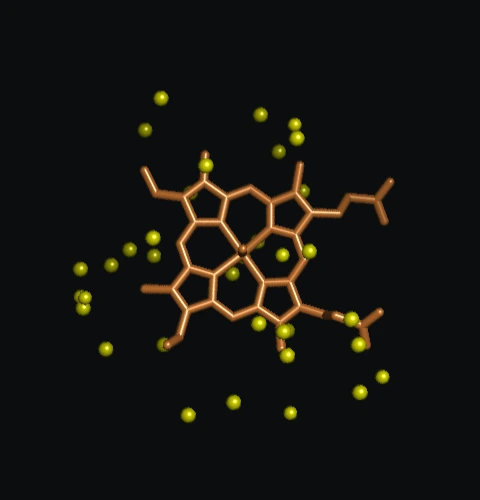
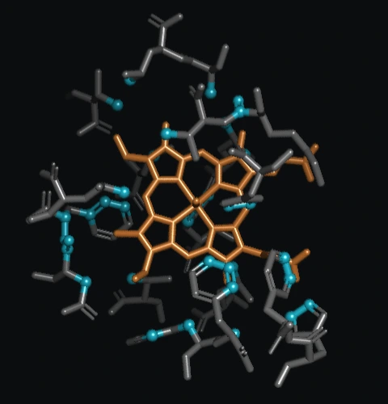

Selection algebra
In Quick start, you used commands to color a structure, change its representation and move the camera. Giving a command an object name makes the whole object its target. What if you want to work on just part of it?
Give a command a group of atoms
A selection is a group of atoms from any of the objects in a scene. It can contain a single atom, part of a molecule, or atoms from several objects at once. When you give a selection to a command such as color, the command colors only those atoms.
Try this on the hemoglobin model from Quick start. Its object name is 1HHO. Run the first command to turn the whole model gray. Then run the second and watch which parts turn orange.
color gray, 1HHOcolor orange, resn HEMBoth hemes turn orange and the protein ribbons stay gray. The expression resn HEM selects every atom whose residue name is HEM. You can use that expression directly wherever a command accepts a selection.
Give the selection a name
If you want to work with those atoms again, you can name the group. Here select gives it the name hemes.
select hemes, resn HEMThe markers appear on both hemes. The console reports 86 atoms, 43 in each heme. Use the name to draw those atoms as sticks, then to fit the camera around them.
show sticks, hemeszoom hemes, buffer=4Now suppose you want to see the protein residues around just one of the two hemes. How would you specify which heme you mean? Start by reading the address of its iron atom.
Which field describes this atom?
Follow the gray ribbon of the beta chain to its orange heme. The iron at its center belongs to residue HEM 147. In this PDB file, the heme atoms appear in a later segment of chain B. Patinae labels the protein segment B and the segment containing its heme B2. The corresponding identifiers for the alpha chain are A and A2.
| Field | Address of this iron in Patinae |
|---|---|
| Object | 1HHO, the loaded structure |
| Chain | B2, the segment containing this heme |
| Residue name and number | HEM 147 |
| Atom name | FE, the atom label in this residue |
| Element | Fe, the chemical element iron |
Try each filter on its own. Each command replaces sample. Which filters also find atoms in the other heme?
select sample, chain B2select sample, resn HEMselect sample, resi 147select sample, name FEselect sample, elem FeIn this structure, resn HEM selects both hemes (86 atoms). Only the beta heme has residue number 147, so resi 147 selects its 43 atoms. Each iron filter selects two atoms, one at the center of each heme.
Names, lists and ranges
In the protein, CA is the name of the alpha carbon of each residue. Element C includes those atoms and the other carbons in the protein. Predict which selection has more atoms.
select sample, polymer.protein and name CAselect sample, polymer.protein and elem CA plus sign lists values of one field. A hyphen includes both ends of a numeric range. Compare the backbone atoms along chain A with the short stretch from residue 10 through residue 15.
select sample, chain A and name N+CA+C+Oselect sample, chain A and resi 10-15What survives each operation?
Use two overlapping sets. chain A* means every atom whose loaded chain identifier starts with A. In this file that includes the alpha protein, its heme and other atoms in its PDB chain. resn HEM covers both hemes. The camera stays still as you replace the selection.
select sample, chain A*select sample, resn HEMIntersection
Where do the two sets overlap? Predict which orange group will carry markers.
select sample, chain A* and resn HEMOnly the 43 atoms of the alpha-chain heme satisfy both conditions.
Union
Keep an atom if either condition holds. Which part of the beta chain enters the selection?
select sample, chain A* or resn HEMThe beta heme joins the A atoms. The gray beta protein stays outside. An atom in both sets is counted once.
Difference
Keep the A atoms and exclude every heme atom. Check the cyan protein and its orange heme separately.
select sample, chain A* and not resn HEMnot resn HEM covers the complement across the loaded scene. Intersecting it with chain A* limits the result to the A segments.
Why did I get zero atoms?
Predict the result of the third command from the first two. An individual atom has just one chain identifier, so these two exact chain IDs cannot both match.
select sample, chain Aselect sample, chain Bselect sample, chain A and chain BFollow one atom through the brackets
Pick any atom in the cyan protein ribbon. It belongs to an A segment and its residue name differs from HEM. Decide whether it should be selected by each of these expressions before pressing Run.
select sample, (chain A* or chain B*) and resn HEMselect sample, chain A* or (chain B* and resn HEM)In the first expression, the final heme test applies to both chain families. You see markers on the two hemes. In the second expression, every A atom qualifies on its own. The cyan ribbon acquires markers as well.
Patinae evaluates not before and, and and before or. Parentheses make the intended groups explicit. A name can also carry a useful intermediate result into the next command.
disable sampleselect heme_a, chain A2 and resn HEMThis name refers to the 43 atoms of the heme in segment A2. We will measure from those atoms in the next chapter.
Which protein atoms are within 4 Å?
The orange sticks show the heme from chain A. Define the two sides of the question. The candidates are protein atoms in chain A. The reference is the group of 43 heme atoms in A2. These names are also prepared when you enter this chapter directly.
select protein_a, chain A and polymer.proteinselect heme_a, chain A2 and resn HEMRead the distance expression from left to right. Keep an atom from protein_a if it lies within 4 ångströms of any atom in heme_a. A protein atom can qualify at the rim of the heme even if it is far from the central iron.
select near_a, protein_a within 4 of heme_adisable *_ashow spheres, near_acolor cyan, near_aThe console reports 35 atoms. The small spheres mark their positions. disable *_a hides the markers for the named selections ending in _a. Their atoms remain available for drawing and measurement.
Move the boundary
If the cutoff grows to 6 Å, can a previously selected atom drop out?
select wider_a, protein_a within 6 of heme_adisable *_ashow spheres, wider_aThere are now 142 atoms. The original 35 remain cyan. The additional atoms form a wider shell around the same heme.
Recover the residues around the heme
An atom can sit close to the heme while the rest of its residue extends away. Start with the same 35 atoms from the previous chapter. Draw them as cyan spheres.
select near_a, protein_a within 4 of heme_adisable *_ashow spheres, near_acolor cyan, near_aNow keep every residue that contains at least one of those atoms. Leave the spheres in place and draw the complete residues as sticks. Watch where the sticks extend beyond the cyan atoms.
select pocket_a, byres (near_a)disable *_ashow sticks, pocket_a

The result contains 158 atoms in 18 residues. Count one alpha carbon per selected protein residue as a cross-check.
select sample, pocket_a and name CALook at histidine 87
The NE2 nitrogen lies about 1.9 Å from the heme iron. Its backbone alpha carbon is over 6 Å from the nearest heme atom. Predict which of those two atoms belongs to the original 4 Å selection, then repeat for the expanded set.
select sample, near_a and resi 87 and name NE2+CAselect sample, pocket_a and resi 87 and name NE2+CAThe first query returns one atom (NE2), the second returns both. Expanding to a whole chain takes the same idea one level higher.
select sample, bychain (near_a)show cartoon, samplezoom sample, buffer=3The markers now trace the entire protein chain A. Reset chapter to return to the pocket.
Two addresses for the same iron
A slash path writes successive fields in a fixed order. Read this one from the left. A leading slash starts at the object, and the empty segment field between two slashes leaves that field unrestricted.
| Position | Value in this address |
|---|---|
| Object | 1HHO |
| Segment | (empty) |
| Chain | A2 |
| Residue | 143 |
| Atom name | FE |
select sample, 1HHO and chain A2 and resi 143 and name FEselect sample, /1HHO//A2/143/FEzoom sample, buffer=5Both selections place a marker on the same iron atom. A path is convenient for a known address. A field expression can also describe a whole class of atoms before you know their addresses.
Selection reference
| Expression | Atoms it describes |
|---|---|
all / none | Every atom in the scene / the empty set. |
polymer.protein / solvent | Protein atoms / solvent atoms. |
chain, resn, resi, name, elem | Filter by chain ID, residue name, residue number, atom name or element. |
and, or, not | Intersection, union and complement. |
within | Keep candidates within the cutoff of a reference atom set. |
byres / bychain | Complete the residues / chains touched by the input. |
select sample, allselect sample, noneselect sample, solventTry two ways to build a 4 Å shell around one heme. around leaves out the starting atoms. expand includes them. With no protein filter, the shell can also contain nearby nonprotein atoms.
select heme_a, chain A2 and resn HEMdisable heme_aselect sample, around 4 heme_aselect sample, expand 4 heme_a38 atoms surround the heme here. Adding its own 43 atoms brings the total to 81.
Find a heme pocket in 4HHB
You now have four protein chains, A through D, each with a heme. Their heme segments are A2 through D2. Work in the prompt and check your prediction on the model. The last exercise builds on the names you create in exercise 4.
1. Find four landmarks
Select the iron atoms in all hemes. How many markers do you expect per heme?
Hint
Combine the residue name with the element.
Solution and check
select sample, resn HEM and elem FeFour atoms, one at the center of each heme.
2. Give one iron two addresses
Find the iron in the D heme, label it with its residue number and use that number to write its slash path.
Hint
Use the D heme segment. The label command accepts resi as its label expression.
Solution and check
select sample, chain D2 and resn HEM and name FElabel sample, resizoom sample, buffer=5select sample, /4HHB//D2/148/FEBoth addresses select the single iron in HEM 148. The residue-number label and marker coincide.
3. Repair the scope of a filter
You want just the A and C hemes. Predict what the expression chain A* or chain C* and resn HEM does to the A protein, then correct it.
Hint
Group both chain families before applying the heme test.
Solution and check
zoom polymer.protein, buffer=3select sample, chain A* or chain C* and resn HEMselect sample, (chain A* or chain C*) and resn HEMThe first query also selects the A protein. The corrected expression selects 86 atoms in two hemes.
4. Build the D pocket
Name the D heme, the atoms of its protein chain within 4 Å and the complete residues they come from. Draw the heme and residues as sticks. Mark the original nearby atoms with small spheres.
Hint
Name the protein candidates first. Apply the distance test before expanding the result to residues.
Solution and check
select heme_d, chain D2 and resn HEMselect protein_d, chain D and polymer.proteinselect near_d, protein_d within 4 of heme_dselect pocket_d, byres (near_d)hide everythingshow sticks, heme_d or pocket_dcolor gray, pocket_dcolor orange, heme_dset sphere_scale, 0.24show spheres, near_dcolor cyan, near_dzoom pocket_d, buffer=2select sample, pocket_d and name CAdisable sampledisable *_d29 nearby atoms belong to 14 residues containing 121 atoms in all. The spheres identify which atoms first brought each residue into the pocket.
5. Test a larger radius
Keep your 4 Å selections. Build new atom and residue selections at 6 Å. Predict how many atoms the old set could lose, and test both sets by taking differences.
Hint
An atom lost from the old set would match the old selection and the complement of the new one. Use the names from exercise 4.
Solution and check
select wider_d, protein_d within 6 of heme_dselect outer_residues, byres (wider_d)select sample, near_d and not wider_dselect sample, pocket_d and not outer_residuesselect sample, outer_residues and name CAAt 6 Å, 120 atoms pass the distance test and 214 atoms belong to the 25 complete residues. Both differences return zero atoms. A single close atom at 4 Å was already enough to include its whole residue.